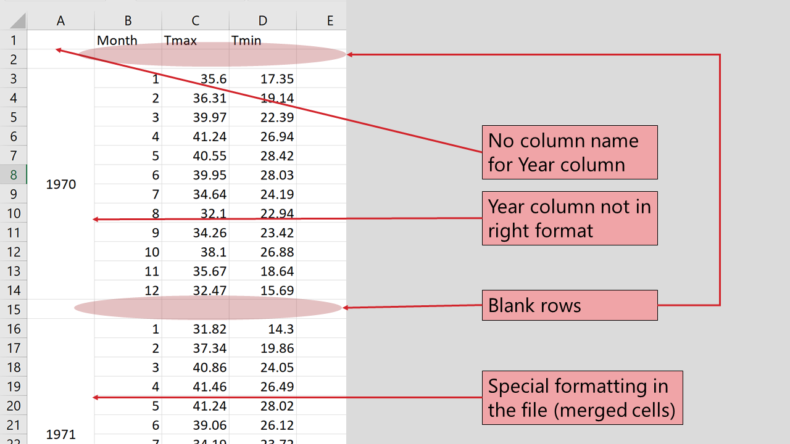
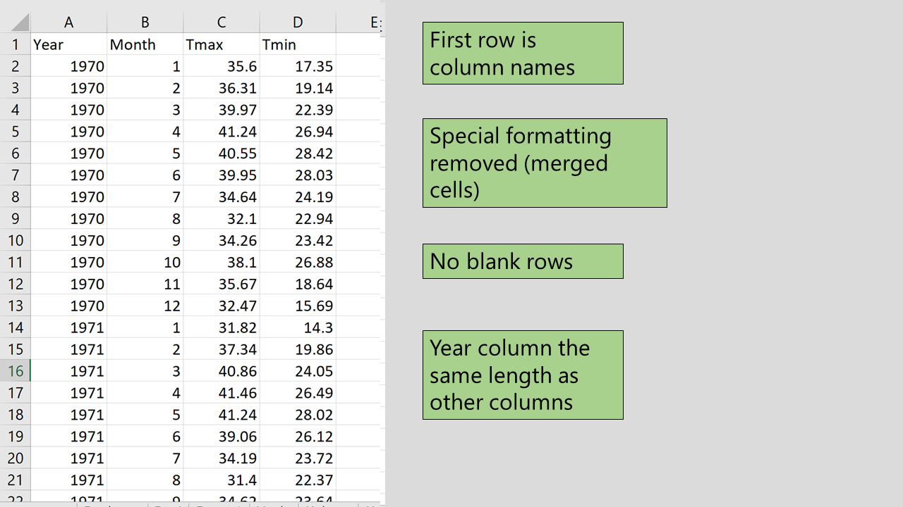

Chapter 6 Importing Data
6.1 Placeholder
Importing data in R can be really easy. To import data in R, you usually use a function with the general form read.___() and that’s it! To make the dataset accessible in R you have to assign it a name e.g.
NAME <- read.___()The object ‘NAME’ is a type of data.frame. As mentioned in earlier, it is essentially a large table, so R expects a “complete” table as the input. If the input is not a “complete” table, R will do it’s best to fill in the blanks - maybe not in the way you expect!
By “complete” table, we mean;
- Each column is of the same length
- Each column is has the same type of value in each object.
- Usually the first row is are the column names
- Contain no blank rows in the middle of the dataset
- have no special formatting
Depending on your data, one of the best tools to check and edit your data is Excel. Another thing to note is an Excel file should only have one rectangle of data per sheet.
Here is an example of a poorly formatted excel sheet

and here is the correted version

6.2 Introduction to UKIreland dataset
The UKIreland data contains data from 2000 to 2016 with the gdp, population, and unemployment rate of the UK and Ireland. (FAOSTAT 2018)
6.3 Reading in data from CSV
CSV format is the most common formats to save data. See notes in the slides about good practice for data structures before reading anything in.
If there are problems in your data before you read it into R, there will be problems with your analysis in R. Make sure you check your data when it comes in - solving the problems in your raw data files is usually easier than solving the problems using R, and will also prevent others using the data from running into the same problems in the future.
UKIreland<-read.csv("path/to/file")6.4 Reading in from Excel
Reading from excel is also easy; but needs an extra package to be installed. There are a lot of different options to do this! My preferred choice is to use the openxlsx library.
library(openxlsx)
UKIreland2<-read.xlsx("path/to/UKIreland.xlsx")
UKIreland2Note that the excel version of the file is different; there is one sheet for each country.
The read.xlsx function automatically only reads in the first sheet. So this line above has only read in the data for Ireland, from the first tab in the Excel file. However, if we have named sheets in our Excel file then reading in the sheets we want is easy:
UK<-read.xlsx("path/to/UKIreland.xlsx","UK")
Ireland<-read.xlsx("path/to/UKIreland.xlsx","Ireland")We can use filter() to produce subsets of our data - e.g. to find the maximum unemployment rate:
filter(UKIreland,unemployment==max(unemployment))## country date gdp population unemployment capital
## 1 Ireland 2012 49177.44 4586897 14.725 DublinRemember the double == when making logical statements
Using pipes and group_by() lets us combine multiple tasks together easily - e.g. finding the maximum unemployment rate within each country
UKIreland %>%
group_by(country) %>%
filter(unemployment==max(unemployment))## # A tibble: 2 x 6
## # Groups: country [2]
## country date gdp population unemployment capital
## <fct> <int> <dbl> <int> <dbl> <fct>
## 1 Ireland 2012 49177. 4586897 14.7 Dublin
## 2 United Kingdom 2011 41412. 63258918 8.09 LondonOr we could use summarise() to calculate average unemployment rates per country:
UKIreland %>%
group_by(country) %>%
summarise(average_unemployment=mean(unemployment))## # A tibble: 2 x 2
## country average_unemployment
## <fct> <dbl>
## 1 Ireland 8.18
## 2 United Kingdom 6.02Note this time - only a single = sign in summarise because we are assigning a value (set average_unemployment to be equal to mean of unemployment). Earlier we wanted R to check if two things were equal (when is unemployment equal to maximum unemployment), so we used ==.
mutate() is a nice function to help us create new variables. E.g. the total number of unemployed people
mutate(UKIreland,TotalUnemployed=unemployment*population/100)| country | date | gdp | population | unemployment | capital | TotalUnemployed |
|---|---|---|---|---|---|---|
| Ireland | 2000 | 26241.51 | 3805174 | 4.266667 | Dublin | 162354.1 |
| Ireland | 2001 | 28227.28 | 3866243 | 3.925000 | Dublin | 151750.0 |
| Ireland | 2002 | 32539.95 | 3931947 | 4.491667 | Dublin | 176610.0 |
| Ireland | 2003 | 41107.03 | 3996521 | 4.616667 | Dublin | 184506.1 |
| Ireland | 2004 | 47630.93 | 4070262 | 4.491667 | Dublin | 182822.6 |
| Ireland | 2005 | 50878.64 | 4159914 | 4.400000 | Dublin | 183036.2 |
| Ireland | 2006 | 54306.91 | 4273591 | 4.525000 | Dublin | 193380.0 |
| Ireland | 2007 | 61359.64 | 4398942 | 4.691667 | Dublin | 206383.7 |
| Ireland | 2008 | 61257.90 | 4489544 | 6.433333 | Dublin | 288827.3 |
| Ireland | 2009 | 52104.04 | 4535375 | 12.050000 | Dublin | 546512.7 |
Note that this is obviously a stupid number from a methodological point of view since unemployment rates are based on “eligible workforce population” rather than total population. But I’m not an economist so let’s go with that for now.
References
FAOSTAT. 2018. “Live Stock.” http://www.fao.org/faostat/en/#data/QA.